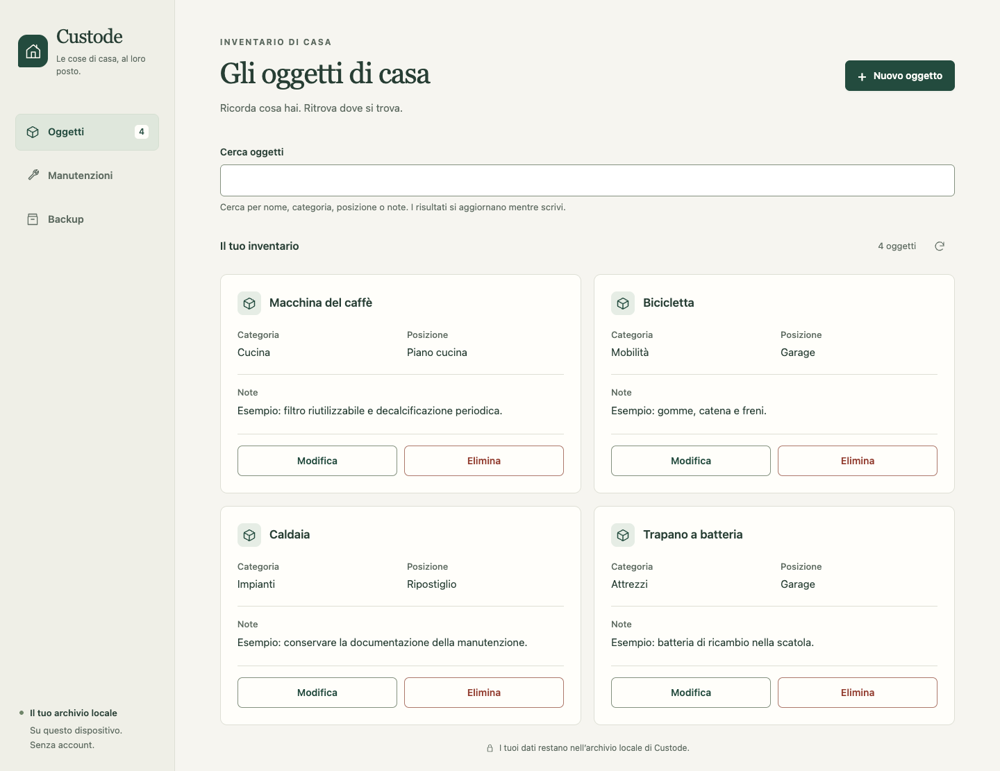
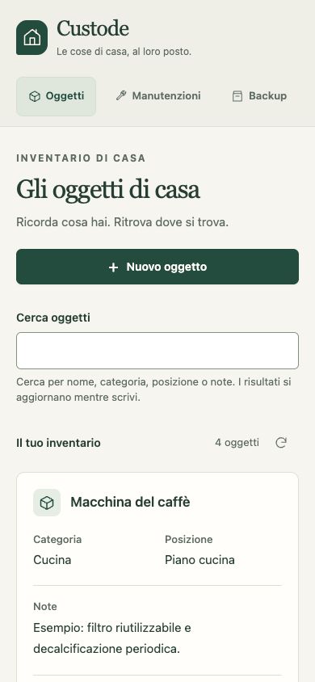

ITERFOX · PROVA REALE · 20 OTTOBRE 2026
Un’app sviluppata mentre l’operatore è assente.
Custode funziona. La prima delega ha prodotto tre esiti certificati e le funzionalità principali dell’app, poi si è fermata su una chiamata interrotta. Un recupero dell’assistente ha completato integrazione, guida e revisione finale.
3/4esiti certificati prima del recupero
0nuovi prompt richiesti all’utente
1recupero dell’assistente
12/12gruppi dell’audit esterno
Il risultato della notte simulata resta BLOCKED, 3/4. Non è stato convertito retroattivamente in un successo. La consegna finale deriva da una seconda autorizzazione tecnica, con una finestra separata. Sono conservati il ledger originale, i worktree, il runtime, i controlli e i tre checkpoint. Il passaggio intermedio è uno snapshot manuale di revisione, non un quarto checkpoint certificato.
Il prodotto che trovi al ritorno
Custode è un’app locale in italiano per inventario domestico, manutenzioni e backup: creazione/modifica/ricerca degli oggetti, scadenze ordinate, ricorrenze, completamento e storico, esportazione JSON e ripristino atomico con consenso. I dati persistono al riavvio. Il codice applicativo è stato scritto dai builder Codex di Iterfox; l’assistente ha preparato obiettivo, fixture e confini, senza correggere manualmente il codice applicativo. Dopo la run l’assistente ha rettificato quattro guide: risultati da leggere nelle ricevute e revisione AI della stessa integrazione, non indipendente.
Apri Custode · Scarica il codice con le guide riviste. L’anteprima usa dati di esempio in un archivio separato: non sono dati inseriti automaticamente dal prodotto. L’app richiede Node 22, senza dipendenze da installare.

L’app consegnata, con dati di esempio separati dalla prova.
Vista mobile emulata a 390 × 844.Una delega, più missioni autonome
La preparazione tecnica ha richiesto 5.6 minuti all’assistente: brief, interfacce verificabili, sei controlli e grafo di quattro esiti. La UI non genera ancora questo insieme completo da una frase. La prima delega ha lavorato per 152.0 minuti prima del blocco, senza coaching, pause o rilanci dell’assistente. Ha creato tre checkpoint e avviato da sola la quarta missione. Le nuove missioni partivano senza prove ereditate e ripetevano i controlli cumulativi.
Dopo il blocco, l’assistente ha verificato il candidato con i dodici gruppi esterni, tutti superati, e avviato il completamento separato. Quest’ultimo è durato 17.3 minuti. Due autorizzazioni tecniche e 29 turni riportati complessivi; nessun altro prompt o decisione richiesto all’utente. Il tempo totale fra le due autorizzazioni include il periodo di blocco e non è tempo di sviluppo continuo.
Protocollo iniziale · Obiettivo e interfacce congelate · Prima delega · Delega di completamento · Intervento dell’assistente
Il limite emerso
L’ultima chiamata ha registrato “The operation was aborted”. Il ledger non contiene un motivo più preciso; il limite configurato per una singola chiamata era di venti minuti. Non risultano richieste di stop o pausa dell’operatore. Il codice dell’ultimo candidato non è cambiato durante il task interrotto. Non attribuiamo quindi con certezza l’abort a rete, timeout o altra causa esterna.
Il comportamento osservato è concreto: il controller ha conservato i risultati e bloccato la delega, senza tentare un recupero autonomo. Prima di considerarlo affidabile per un’intera notte, serve recupero limitato delle interruzioni tecniche, con causa registrata, processo precedente terminato, verifica dei file e rispetto della finestra e dei permessi originali. Un limite globale esaurito o una pausa dell’operatore devono continuare a fermare il lavoro.
Come si governa la prova
Plancia originale: 3/4, bloccata · Plancia del completamento: 1/1. In Delegations → Read project brief leggi risultati, attenzione e provenienza; apri le missioni in Live Trail per attività e verifiche. Queste due fasi restano separate anche nell’interfaccia. Push, merge e pubblicazione non sono stati eseguiti.
Morning Brief originale offline · Morning Brief del completamento offline. I rapporti nativi mantengono i rispettivi stati: non riscrivono il primo blocco. I checkpoint totali sono quattro, tre nella prova originale e uno nel completamento, oltre allo snapshot di revisione esplicitamente non certificato.
Verifiche esterne e qualità
12/12 gruppi superati sul codice consegnato: record Unicode, scritture parallele, cinquanta ricorrenze generate, completamenti concorrenti, venti importazioni corrotte, riavvio, percorsi statici, markup ostile, accenti italiani, UTF-8 frammentato e tipi JSON malformati. I nove gruppi iniziali e i tre aggiuntivi erano stati preparati prima del blocco, senza feedback al modello nella prima esecuzione.
- PASS 48 seeded Unicode/text records and reference search
- PASS 24 concurrent creations do not lose or duplicate writes
- PASS 50 generated civil-date recurrence cases including year boundaries
- PASS Concurrent one-off completion stores exactly one history entry
- PASS Every rejected import preserves exact original backup, 20 cases
- PASS Exported data remains valid after deleting a task with history
- PASS Full dataset remains byte-for-byte equivalent after process restart
- PASS Static routes do not expose source, objective, tests or data
- PASS Literal imported markup cannot execute in desktop/mobile UI
- PASS Italian accented upper/lower case search across all text fields
- PASS UTF-8 JSON survives a network chunk splitting an accented character
- PASS Malformed JSON root types return 4xx without changing saved state
La nuova gestione dei salvataggi incerti è stata verificata separatamente con 3/3 gruppi di guasti di rete: il server salva, la risposta viene scartata e l’interfaccia deve permettere una rilettura senza duplicare la richiesta.
- PASS Lost inventory response: reread and close/reopen never repeat a committed write
- PASS Uncommitted failed creation can be explicitly retried after a read
- PASS Lost maintenance response: fresh read shows one saved task without resubmission
Revisione visiva dell’assistente: Interfaccia coerente e usabile nei flussi osservati. È un giudizio qualitativo su schermate reali, separato dalle verifiche deterministiche e dalle revisioni AI della stessa integrazione.
- Gerarchia visiva chiara, ricerca e azioni principali leggibili, stile coerente fra inventario, manutenzioni e backup.
- Navigazione, schede e modulo funzionano a 390px senza scorrimento orizzontale. Il dialogo del ripristino rientra nel viewport e richiede il consenso esplicito.
- I dati del file sono riepilogati prima del consenso. L’errore di JSON invalido è leggibile e disabilita il ripristino; le osservazioni non hanno modificato il database.
- Il viewport mobile normale non mostra la sovrapposizione vista nella prima cattura a pagina intera con focus attivo. Gli indicatori di focus sono visibili nei flussi da tastiera.
Audit funzionale · Robustezza aggiuntiva · Guasti di rete · Revisione visiva · Consenso al ripristino e anteprima
Pianificazione e prove
0 controlli finali falliti e 11 prove non superate differite perché c’era ancora implementazione pianificata. Un controllo non soddisfatto non è stato trasformato in un PASS. La causa del blocco è distinta dai risultati funzionali verdi. Le revisioni AI sono della stessa integrazione Codex, non di un valutatore indipendente.
reliable-inventory — COMPLETED, 5 turni
Run 20261020T142648-35f27844
Checkpoint 3baad1931f9f79aa9fc1bb724d843cd12eb88404
- Implement durable, validated inventory CRUD · PASSED
Implemented validated inventory CRUD, combined case-insensitive search, transactional SQLite persistence, bounded HTTP bodies, loopback-only listening and Italian documentation. Focused checks passed, including literal text preservation, storage failures and crash recovery. HTTP listener acceptance remains for host verification. - Complete combined search and resilient HTTP boundaries · PASSED
Completati i confini HTTP: percorsi anomali rifiutati, errori JSON coerenti e limite di 2 MiB. Passati 87 casi mirati in processo, inclusi ricerca combinata e rifiuti senza mutazioni. README aggiornato. HTTP reale e riavvio restano da verificare sull’host. - Document the implemented inventory service · PASSED
README aggiornato in italiano con avvio, variabili d’ambiente, percorso predefinito del database, esempi HTTP, persistenza e limiti attuali. Documentazione confrontata con il codice; verifiche HTTP e riavvio richieste all’host.
[
{
"outcome": "ready",
"summary": "Outcome 1 is ready for review. Source inspection found no concrete remaining inventory gap. Current host receipt 275c0ecc-4ea9-4453-b706-75117f8d2d25 reports all eight inventory acceptance groups passed.",
"findings": [],
"decisions": [
{
"choice": "Accept the documented combined search semantics.",
"basis": "src/inventory.mjs combines case-insensitive substring search across all four text fields with exact category and location filters using AND."
},
{
"choice": "Accept the inventory persistence and HTTP implementation.",
"basis": "Source inspection confirms validation before writes, transactional SQLite persistence, literal text preservation, bounded request bodies, loopback listening and JSON error handling. README.md matches the implemented behavior."
},
{
"choice": "Keep subsequent outcomes deferred.",
"basis": "The active delegation requires inventory APIs only; UI, maintenance and application backup remain assigned to later outcomes."
}
],
"tasks": [],
"operatorQuestion": "",
"stamp": {
"head": "1892c983f18b7332a0c24b431b02d3ee3be3e668",
"files": {
".gitignore": "38af0c189b6ea42f53b44594ce1cb8fe26b4861079fe816e4babbbb8c0b33374",
"BRIEF.md": "6d924142cfafaf42c0f91215fa4a44e3c24022079e585d462081a732491bdb01",
"README.md": "bebf17f533a2182cb7fe7667499cd6bbcb0ac08a4f1a4cb4d5f9088964eeead5",
"package.json": "059e15020af9ea47307d8b9b6112991177ee25f1458b9351ea0a6c61a1bb1c1c",
"src/errors.mjs": "e80649a6029653512539fab5b2a950aa01ce047c48c709af23ead8d89f1a2cde",
"src/inventory.mjs": "abd476e31241a521120d30a65de8587b7124eef594ad1264133521509867bee8",
"src/server.mjs": "9cbbbf2a42600b0ba66c7084fbf5993bf7d8fb960869fec1171e584c5ae5aa54",
"src/store.mjs": "453ba88e0f4b39bda7fae8bbe36be8be2e5b8ee4681c5b499ed30afd92681285",
"tests/acceptance.mjs": "cd51582a782f0400fe1729ba27b4df50a388c0057f6f41ad63fed52ef8c1aaf3"
},
"fingerprint": "d12cb9a31c5c21b24140bc8a9becea47baa0720b159ef5914369f62d078a1be3"
},
"noteIds": [
"dbf99c7c-38a7-41a5-89d9-b89bfa3b496b"
],
"directionRevision": 1,
"contractVersion": 1,
"nodeId": "4d6f6daf-aecd-432f-b734-5536b74036b8",
"at": "2026-10-20T14:45:11.939Z",
"independent": false
}
]usable-inventory — COMPLETED, 8 turni
Run 20261020T144512-fd44a424
Checkpoint 6ca9f2e7e21e990662505af6b18850f56f0eae98
- Servire il primo percorso completo di inventario · PASSED
Implementato il primo percorso: pagina Custode con risorse locali confinate a public, elenco reale, form accessibile collegato a POST, stati vuoti/errori e layout responsive. Manutenzioni e Backup disabilitati; nessun dato dimostrativo. README e scelte progettuali aggiornati. Superati controlli statici e 34 verifiche HTTP in processo. Browser, layout effettivo e persistenza richiedono verifica host. Ricerca, modifica ed eliminazione UI restano ai task successivi. - Collegare ricerca e stati dell’elenco · PASSED
Collegata Cerca oggetti al filtro q dell’API, con cancellazione, protezione dalle risposte obsolete e stati distinti di caricamento, archivio vuoto, nessun risultato ed errore recuperabile. Aggiunta sempre disponibile. Controlli mirati passati; browser e layout richiedono verifica host. Modifica/eliminazione restano ai task successivi. - Completare modifica ed eliminazione con conferma · PASSED
Aggiunte azioni accessibili Modifica/Elimina, form precompilato con PATCH e conferma annullabile prima di DELETE. Gestiti errori, conflitti e aggiornamento della ricerca senza rimozioni anticipate. Documentazione aggiornata e controlli mirati in processo superati. Browser, layout e persistenza dopo riavvio richiedono verifica host. - Rendere affidabili form e feedback · PASSED
Rafforzati errori associati ai campi, conservazione dei valori, blocco degli invii duplicati e annunci accessibili. Distinti salvataggi confermati da errori di ricaricamento; preservati testo letterale e campi invariati. Passati 64 confronti Unicode UI/API e controlli mirati nel DOM simulato. Browser reale e screen reader restano da verificare sull’host. - Completare il layout e l’uso da tastiera · PASSED
Esaminate le schermate host e migliorati leggibilità, contrasto, layout per testi lunghi e gestione del focus nei dialoghi e durante gli aggiornamenti. Superati 27 controlli mirati in DOM simulato. Rendering, tastiera e zoom reali richiedono verifica host aggiornata. API preservata. - Aggiornare la guida all’inventario utilizzabile · PASSED
README aggiornato con accesso all’interfaccia, creazione, ricerca, modifica, eliminazione e recupero dagli errori. Chiariti bozze, limite loopback e funzioni ancora assenti; conservate istruzioni su avvio, API e persistenza. Confronto statico con il codice completato; browser, HTTP e riavvio restano da verificare sull’host.
[
{
"outcome": "ready",
"summary": "L’esito 2 è pronto per la revisione: codice, documentazione e schermate host esaminati. Le prove correnti passano; non emergono lacune concrete che impediscano l’uso dell’inventario.",
"findings": [],
"decisions": [
{
"choice": "Considerare completato l’inventario usabile.",
"basis": "public/index.html, public/app.js e public/styles.css implementano form accessibili, ricerca, modifica, eliminazione con conferma e stati recuperabili. Le schermate host desktop e 390px mostrano un inventario leggibile. Ricevute correnti: inventory 6680eccd-a8e6-4ded-84b5-ecba61f22bfd; inventory-ui 7c1938f0-68d7-4f98-9278-af3bdd581694. Eliminazione ed errori sono stati valutati dal sorgente, senza eseguire un nuovo browser."
},
{
"choice": "Preservare il perimetro dell’esito corrente.",
"basis": "L’API esistente è preservata; README.md descrive utilizzo, persistenza e limiti reali. Manutenzioni e Backup sono chiaramente disabilitati e restano agli esiti successivi previsti da BRIEF.md."
}
],
"tasks": [],
"operatorQuestion": "",
"stamp": {
"head": "3baad1931f9f79aa9fc1bb724d843cd12eb88404",
"files": {
".gitignore": "38af0c189b6ea42f53b44594ce1cb8fe26b4861079fe816e4babbbb8c0b33374",
"BRIEF.md": "6d924142cfafaf42c0f91215fa4a44e3c24022079e585d462081a732491bdb01",
"README.md": "5a8b1f1d8b325d320bbc36ac0a8834c4b0019a3bfec977b39bca3633de60ead6",
"docs/ui-inventario.md": "905aa2a62347c621d7b6f1a4e54b64dacfc2562c42bbcb21bf4c7cdc66aedae1",
"package.json": "059e15020af9ea47307d8b9b6112991177ee25f1458b9351ea0a6c61a1bb1c1c",
"public/app.js": "397ab27a6eae0988d97aed19ba17c974885364625bb47bb4c6e840df287e0374",
"public/favicon.svg": "b4fddcb795fed38eb7025b73d3e941bf19b1b1407c9bd99a0d513f1f08fc424e",
"public/index.html": "4c2270f1af97317be0c956bacb4260cfb5c0df9d11a056d8bdfb80e63461e7e1",
"public/styles.css": "6fb0d98f7b09fb63521d11cceca166a699da6707b3620e2409e5e44b4fa9429e",
"src/errors.mjs": "e80649a6029653512539fab5b2a950aa01ce047c48c709af23ead8d89f1a2cde",
"src/inventory.mjs": "abd476e31241a521120d30a65de8587b7124eef594ad1264133521509867bee8",
"src/server.mjs": "b16f4a452741a827446be9a036903914f5df055959b89c564a64c79ee29bd67d",
"src/store.mjs": "453ba88e0f4b39bda7fae8bbe36be8be2e5b8ee4681c5b499ed30afd92681285",
"tests/acceptance.mjs": "cd51582a782f0400fe1729ba27b4df50a388c0057f6f41ad63fed52ef8c1aaf3"
},
"fingerprint": "1c78a9f813a072230605bfaa7bc3c4c3f55ac59a8d386d7428a6befd9177dbdc"
},
"noteIds": [
"88a59696-84ff-4f2f-9747-c0be50bb5d7f"
],
"directionRevision": 1,
"contractVersion": 1,
"nodeId": "3b93ded0-ce87-4cc1-bca5-3c8333da69b1",
"at": "2026-10-20T15:26:03.850Z",
"independent": false
}
]maintenance-workflow — COMPLETED, 7 turni
Run 20261020T152604-46b3d576
Checkpoint cb513eb21a98abdc21aae66debcd93ee98c01673
- Archivio e API manutenzioni complete · PASSED
Implementato il backend manutenzioni: migrazione transazionale, CRUD validato, completamenti atomici, ricorrenze civili, storico e panoramica. Preservati inventario, riferimenti e limiti HTTP. Passati controlli mirati locali; verifiche host richieste. Documentazione aggiornata; interfaccia manutenzioni al prossimo task. - Programmazione e panoramica nell’interfaccia · PASSED
Attivata Manutenzioni con creazione tramite API, selezione dall’inventario completo, scadenze ordinate, conteggi e gestione recuperabile degli errori. Preservate ricerca e bozze; documentazione aggiornata. Controlli statici e mirati superati; browser da verificare sull’host. Completamento e storico UI restano ai task successivi. - Completamento e storico consultabile · PASSED
Collegati completamento e Storico: date validate, aggiornamento di scadenze e conteggi, distinzione tra una tantum conclusi e ricorrenti attivi. Conservati valori dopo errori, bloccati invii duplicati e separati scrittura confermata e ricaricamento fallito. Documentazione aggiornata; controlli mirati in processo superati. Browser, layout e listener richiedono verifica host. - Modifica ed eliminazione degli interventi · PASSED
Implementate modifica precompilata con PATCH parziali ed eliminazione con conferma esplicita. Conservati storico e bozze separate; gestiti conflitti tra finestre e risposte incerte senza ricreazioni automatiche. Documentazione aggiornata e controlli mirati in processo superati. Browser, layout e riavvio del processo richiedono verifica host. - Integrazione accessibile e guida aggiornata · PASSED
Completata l’integrazione: focus, ricerca e bozze preservati, dettagli leggibili nel select, conteggi accessibili e protezione dalle letture obsolete. Completamenti protetti dai conflitti di versione. README e documentazione aggiornati; Backup resta futuro. Passati controlli mirati in processo e sintassi. Schermate host esaminate; browser, manutenzioni a 390px e tastiera nativa richiedono nuova verifica host.
[
{
"outcome": "ready",
"summary": "L’esito 3 è pronto alla revisione: API validate, scadenze, completamenti, storico persistente e interfaccia integrata. L’ispezione di codice, documentazione e schermate disponibili non ha individuato lacune materiali residue. Le quattro prove host correnti sono positive.",
"findings": [],
"decisions": [
{
"choice": "Considerare completo il percorso manutenzioni.",
"basis": "src/maintenance.mjs e src/store.mjs implementano date civili, ricorrenze e storico atomico; public/app.js e public/index.html collegano creazione, modifica, eliminazione e completamento con gestione degli errori. Ricevute: c5abcff1-4f4a-419e-98f3-471c84e7ed1a e 29a94599-2a19-42ad-8aa0-fe36b8488e6b."
},
{
"choice": "Considerare preservato l’inventario entro le verifiche disponibili.",
"basis": "La migrazione conserva la tabella degli oggetti; ricerca e CRUD restano integrati. Ricevute correnti positive: e133efbc-a254-42d7-a245-b639f2cd9ef6 e ccb42a3d-2806-4e10-82fe-f6905e59c9e3."
},
{
"choice": "Limitare le conclusioni visive alle schermate osservate.",
"basis": "Esaminate maintenance-ui-desktop.png e maintenance-ui-mobile.png: la prima mostra scadenze e storico; la seconda mostra l’inventario a 390px. I dialoghi e le manutenzioni su telefono sono stati esaminati nel sorgente, senza eseguire un browser."
},
{
"choice": "Lasciare backup e ripristino alla continuazione successiva.",
"basis": "BRIEF.md li assegna all’esito 4; interfaccia e README ne indicano correttamente la disponibilità futura."
}
],
"tasks": [],
"operatorQuestion": "",
"stamp": {
"head": "6ca9f2e7e21e990662505af6b18850f56f0eae98",
"files": {
".gitignore": "38af0c189b6ea42f53b44594ce1cb8fe26b4861079fe816e4babbbb8c0b33374",
"BRIEF.md": "6d924142cfafaf42c0f91215fa4a44e3c24022079e585d462081a732491bdb01",
"README.md": "b4adb8ae6d55b6e7b897c9e7503f979602272fb9fb86f49f737e6c4b4e18335a",
"docs/api-manutenzioni.md": "68f61042d0860ba3352578acac89426b3ce928cf65764276ace49024c4f8f3a0",
"docs/ui-inventario.md": "b56253513a73c9bca6e8c07814c9853c1613641aa658b87f23289fa5f73f41aa",
"docs/ui-manutenzioni.md": "b9280bf4f3809df0ca81c549221e303f8c2c8430718ff3edcdc0937c82ecf108",
"package.json": "059e15020af9ea47307d8b9b6112991177ee25f1458b9351ea0a6c61a1bb1c1c",
"public/app.js": "b680742d22345bd547aad5b3bd796be27bf1e5ac77c0d44f913cd49c4eee1349",
"public/favicon.svg": "b4fddcb795fed38eb7025b73d3e941bf19b1b1407c9bd99a0d513f1f08fc424e",
"public/index.html": "b85d872d30d339aedd10c735589895b9a60d2cdf2a591944abf561aa4666ce8e",
"public/styles.css": "09c6b701023e2578d3f6e891ca02fe85d4ed15d8d84be9119312f7787b48b435",
"src/errors.mjs": "e80649a6029653512539fab5b2a950aa01ce047c48c709af23ead8d89f1a2cde",
"src/inventory.mjs": "abd476e31241a521120d30a65de8587b7124eef594ad1264133521509867bee8",
"src/maintenance.mjs": "9a1576c725c755efddbda8252b18f56a8616bb838cee53501817e692f51c9994",
"src/server.mjs": "f1fef9916d2ea0dabb9305a5be372736754d5e66cb52d9a24bb0bd4d07d197cb",
"src/store.mjs": "3fa2e280d9acb4603501c345e04b105dd478bbcd388c658eb17697df140930d1",
"tests/acceptance.mjs": "cd51582a782f0400fe1729ba27b4df50a388c0057f6f41ad63fed52ef8c1aaf3"
},
"fingerprint": "557abda9249d3e1508accfa61d02ba601c72cc25870fea40d997d107a4b2c3c0"
},
"noteIds": [
"946cc48e-c48f-4b54-b7bb-537e0b841186"
],
"directionRevision": 1,
"contractVersion": 1,
"nodeId": "d4e622f0-0ed4-479a-a0fa-67da3e3d7737",
"at": "2026-10-20T16:11:35.530Z",
"independent": false
}
]safe-return — BLOCKED, 4 turni
Run 20261020T161136-f1baf0a7
Snapshot non certificato; nessun checkpoint per questo esito nella prima delega.
- Implementare backup completo e ripristino atomico · PASSED
Implementate GET /api/backup e POST /api/restore con snapshot coerente, validazione completa e sostituzione transazionale. Preservati testi letterali, identificativi, date, interventi eliminati e ordine dello storico. Documentati uso, recupero e limite HTTP di 2 MiB. Controlli mirati locali superati, inclusi rollback forzato e concorrenza; listener da verificare sull’host. Interfaccia Backup lasciata al task successivo. - Attivare download e conferma esplicita nell’interfaccia · PASSED
Attivata Backup con download JSON completo, lettura senza scritture e ripristino con riepilogo e consenso obbligatorio. Gestiti annullamento, focus, nomi file letterali, errori e invii duplicati; documentazione aggiornata. Controlli mirati locali passati. Download e tastiera nativi, layout desktop/390px e regressioni richiedono verifica host. - Integrare recupero degli errori e cambio di archivio · BLOCKED
- Consegnare una guida operativa aderente al prodotto · PENDING
[]
complete-return — COMPLETED, 5 turni
Run 20261020T182810-4cfa5d18
Checkpoint c11af3764f1deec8a596daa235c8dc85f983d1c8
- Recover uncertain inventory writes without immediate repetition · PASSED
Implemented GET-only inventory creation recovery: drafts and search persist, and repeat creation stays blocked until a valid full-inventory read. Validation correction remains available. DELETE success now requires valid confirmation. Syntax and focused mocked-handler checks passed; host/browser verification and independent source review remain pending. - Apply creation recovery to new maintenance · PASSED
Added maintenance creation recovery that preserves drafts and blocks repeat creation until successful GET-only reconciliation. Users can inspect current interventions, including concluded ones, before explicitly retrying. Validation retries, item-loading recovery, version checks and restore cleanup remain intact. Syntax, markup and focused simulated checks passed; real browser behavior and host acceptance remain unverified. - Reconcile guidance with the preserved product and recovery changes · PASSED
Updated README and guides for creation recovery and implemented Backup, corrected stale claims, and marked inherited evidence historical. Preserved restore, archive-refresh, storage and size-limit guidance. Documentation checks passed; fresh host checks and independent source review remain pending.
[
{
"outcome": "ready",
"summary": "Read-only review against BRIEF.md found no material remaining gap. All six current host checks pass. Ready for the host’s independent ready review.",
"findings": [],
"decisions": [
{
"choice": "Preserve the focused recovery implementation.",
"basis": "public/app.js and public/index.html preserve creation drafts, block uncertain repeat creation until successful GET-only reconciliation, validate deletion confirmation, and clear prior archive state after confirmed restore. src/store.mjs and src/backup.mjs retain transactional persistence, history and validated atomic replacement."
},
{
"choice": "Accept the six current host receipts as verification evidence.",
"basis": "inventory: 4662d120-ac7a-487e-b0b8-4378d560394e; inventory-ui: 456bd0c1-aad1-4827-980a-5a5c8e89694e; maintenance: cc4cd09b-e185-49b5-8fa7-e05d94aa5926; maintenance-ui: 347ce7f1-7a27-4745-a065-2e1a763998b2; backup: 613f5d6a-01f4-4c92-984c-2afbfee21fd4; backup-ui: dfc15702-8037-482f-a4f5-c027dc7c1f82. Each is marked passed."
},
{
"choice": "Advance without additional implementation.",
"basis": "README.md and docs describe implemented recovery, backup, storage and size limits and identify inherited observations as historical. No concrete remaining product gap warrants another patch. This supervisor review did not run a browser or inspect supplied PNGs; independent review remains a host step."
}
],
"tasks": [],
"operatorQuestion": "",
"stamp": {
"head": "7dc07f5cd1e3faf5ae946caf084762f72d45ebc3",
"files": {
".gitignore": "38af0c189b6ea42f53b44594ce1cb8fe26b4861079fe816e4babbbb8c0b33374",
"BRIEF.md": "6d924142cfafaf42c0f91215fa4a44e3c24022079e585d462081a732491bdb01",
"README.md": "9d93a8177adbbff10dcb2a11259cd395f28ad09fdd65e10989bc3c1374481315",
"docs/api-backup.md": "62f24aa7d569e8c3cb428479b0d239fb580abc1fb4c1ff8e4bae8dfcdc74745c",
"docs/api-manutenzioni.md": "6b788bfb9f68957e73a4a596abd1bba8e319daaa15ddb053cae0f0bad154f340",
"docs/ui-backup.md": "dd64f9673c976692997c4e5c1076255e01a9c4ad64711fba26f3f4b062245192",
"docs/ui-inventario.md": "75a55fabfe6aff8cf30f51d631769ded5700cb62a38ba02ecd657b9c59644e19",
"docs/ui-manutenzioni.md": "cd616dd13a6dd14b6c4c198614ab410934c5d454e9487a122cef6f0475c5ea9d",
"package.json": "059e15020af9ea47307d8b9b6112991177ee25f1458b9351ea0a6c61a1bb1c1c",
"public/app.js": "14672081434d4ecc1459afeef57af251c01fad737fa53204a3178c82dbf27430",
"public/favicon.svg": "b4fddcb795fed38eb7025b73d3e941bf19b1b1407c9bd99a0d513f1f08fc424e",
"public/index.html": "f59426340f00513517e59197efbc01b357101a1f33205a68e01ee38f0b821220",
"public/styles.css": "43808ae7f6e280c905a0b00afbc5c5a13c124fa05c223763ed8c3eb263eb164c",
"src/backup.mjs": "e6a6b58667e1fad0d9dd2e21e351eadb500cb33d06d6c7bfdb52cf91a03c4661",
"src/errors.mjs": "e80649a6029653512539fab5b2a950aa01ce047c48c709af23ead8d89f1a2cde",
"src/inventory.mjs": "abd476e31241a521120d30a65de8587b7124eef594ad1264133521509867bee8",
"src/maintenance.mjs": "9a1576c725c755efddbda8252b18f56a8616bb838cee53501817e692f51c9994",
"src/server.mjs": "ecdcd6e7ba249b28d49c399f30cfecd5d393d63c63a69a4dd72ac4b7e537561e",
"src/store.mjs": "e10978d6dc097997fd98a55f741708c02e3eaebdaa2cf5ef68b8eb0f9964b1c6",
"tests/acceptance.mjs": "cd51582a782f0400fe1729ba27b4df50a388c0057f6f41ad63fed52ef8c1aaf3"
},
"fingerprint": "9fd6cc05a50adbb7a3e3252ac4e26a392f14c29da061643f85a454073764f4ad"
},
"noteIds": [
"9078a2d6-05e4-4ea6-a7b3-58d7e30cf163"
],
"directionRevision": 1,
"contractVersion": 1,
"nodeId": "2ac049bd-5730-40f1-8191-cab8eef7939f",
"at": "2026-10-20T18:45:28.757Z",
"independent": false
}
]Audit di identità, provenienza e immutabilità · Stato originale al blocco · Provenienza dello snapshot di recupero
Il valore misurato
Il lavoro utile durante l’assenza è reale: inventario, interfaccia, manutenzioni e backup sono stati costruiti con una delega, senza una persona che rilanciasse ogni missione o scrivesse i singoli prompt. L’operatore trova codice, verifiche e checkpoint. La necessità di un recupero esterno è altrettanto reale e resta il limite operativo principale mostrato da questa prova.
Questo caso non confronta due esecuzioni equivalenti di Codex diretto e Iterfox e non dimostra una superiorità universale. Dimostra continuità utile su un progetto nuovo, con confini e verifiche predisposti, e individua il passaggio di affidabilità da completare. Non è una prova di otto ore ininterrotte o di avvio autonomo da una sola frase nella UI.